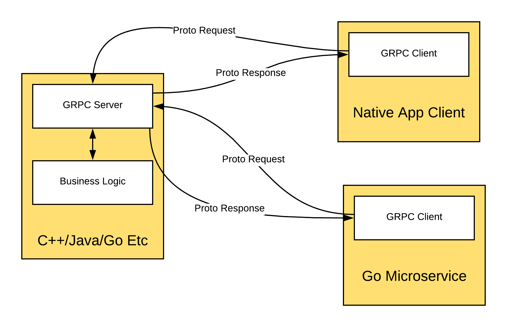
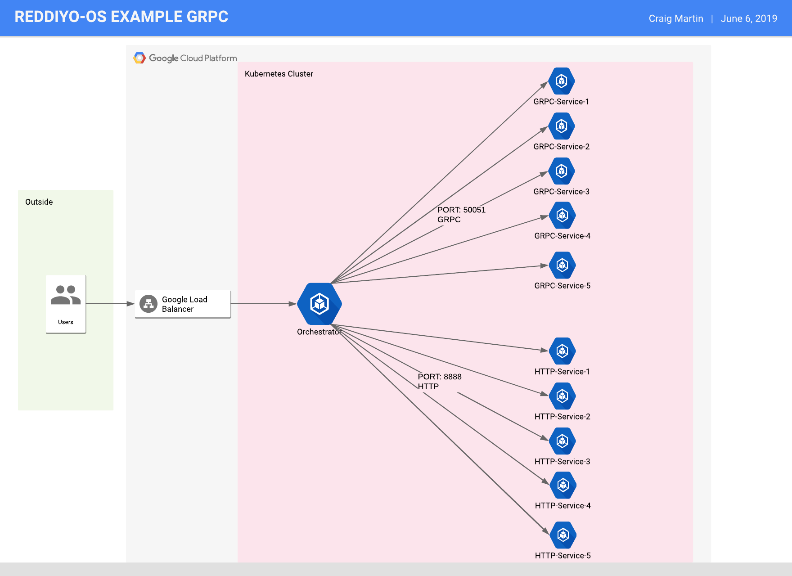
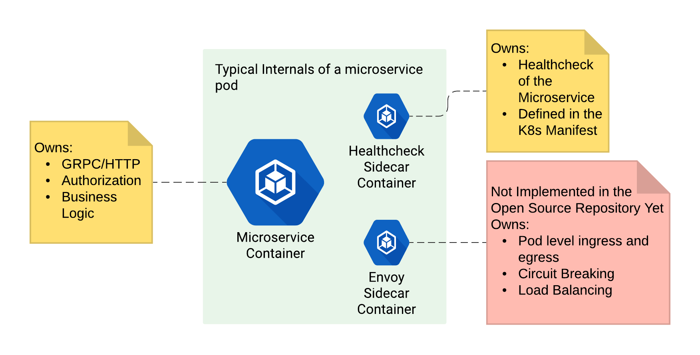

GRPC
Experiences and Stumbles
GRPC is Better
This will be a short talk, everyone knows that GRPC is vastly superior to HTTP.

|
|
Core Concepts To Fully Understand GRPC
- Protobuf
- HTTP 2 - as it relates to GRPC
- GRPC
Protobuf
- Mechanism for serializing structured data
- Language Agnostic
- Defines a schema through a proto
- Tranport mechanism that GRPC Uses
``` message Person { required string name = 1; required int32 id = 2; optional string email = 3; enum PhoneType { MOBILE = 0; HOME = 1; WORK = 2; } message PhoneNumber { required string number = 1; optional PhoneType type = 2 [default = HOME]; } repeated PhoneNumber phone = 4; } ```
HTTP 2
Enough to wet the palate
- First MAJOR release (2015) of HTTP since 1996
- Reduced latency and improved security
- Single TCP Connection
- Multiplexing
- Binary Protocols
- Communication Mechanism that GRPC Uses
GRPC
|
 |
Working Example
https://github.com/reddiyo-os/grpc-demo Internals of a Pod
Proto Patterns
| Pattern | Rationale |
|---|---|
| User the scalar types when possible | Always favor the lightweight |
| Use Enums when possible | Data Integrity |
| Version your Proto files | Helps with Client Version Management |
| Do not reuse variable numbers | Ensures backwards compatability |
Main Packages
| Pattern | Rationale |
|---|---|
| Catastrophic Failures | No point in starting if you cannot get main running |
| Bounded Context of Protobufs | Fully Decouples transport layer from business logic |
| Use Standard Protobuf Errors | Simplicity and Consistency |
| Owns full instantiation of the service layer | Singleness of purpose |
| Use the Getters and Setters | Keeps data integrity |
| Never Send Nils - use empty package | Protobuf cannot handle nil |
Microservice Logic Layer Package
| Pattern | Rationale |
|---|---|
| Protobuf Structures don't pass into this layer | Keeps separation of transport from business logic |
| All Unit Testing is at the microservice layer | Allows unit tests to focus entirely on business logic |
| All Exported Functions return errors | Allows transport layer to handle errors |
| Only Export what you have to | Quarantines the microservice code |
Client Package
| Pattern | Rationale |
|---|---|
| Contain the Connection data in a struct | Makes it easy to reuse and control |
| Use a Constructor to generate the connection | Isolates how to create the connections |
| Initialize connections as part of startup | Want the client to fail if it cannot get a connection |
| Integration tests reside with the client and are owned by the consumer | Helps to ensure that backwards compatability is maintained |
| Don't allow protobuf to go beyond the client | Separates transport protocol layer from business logic |
| Convert Protobuf Error Codes to Structs | Helps that downstream systems will not have to be transport aware |
| Only Export what you have to | Quarantines the microservice code |
Random Notes and Lessons Learned
- Load Balancing
- Circuit Breaking
- Never Make Backwards Incompatable Change
Load Balancer
|
Circuit Breaking
|
In Conclusion
- GRPC is a solid choice for lightweight client server communication (Languange Agnostic, Type Secure, and backwards compatable)
- Great fit for service mesh in your microservices
- Benefits from strong architectual patterns and decoupling
Fragments
Hit the next arrow...
... to step through ...
... a fragmented slide.
Fragment Styles
There's different types of fragments, like:
grow
shrink
fade-out
fade-right, up, down, left
fade-in-then-out
fade-in-then-semi-out
Highlight red blue green
Transition Styles
You can select from different transitions, like:
None -
Fade -
Slide -
Convex -
Concave -
Zoom
Themes
reveal.js comes with a few themes built in:
Black
(default) -
White
-
League
-
Sky
-
Beige
-
Simple
Serif
-
Blood
-
Night
-
Moon
-
Solarized
Slide Backgrounds
Set data-background="#dddddd" on a slide to change the background color. All CSS
color formats are supported.
Image Backgrounds
<section data-background="image.png">Tiled Backgrounds
<section data-background="image.png" data-background-repeat="repeat" data-background-size="100px">Video Backgrounds
<section data-background-video="video.mp4,video.webm">... and GIFs!
Background Transitions
Different background transitions are available via the backgroundTransition option. This one's called "zoom".
Reveal.configure({ backgroundTransition: 'zoom' })Background Transitions
You can override background transitions per-slide.
<section data-background-transition="zoom">Iframe Backgrounds
Since reveal.js runs on the web, you can easily embed other web content. Try interacting with the page in the background.
Pretty Code
import React, { useState } from 'react';
function Example() {
const [count, setCount] = useState(0);
return (
<div>
<p>You clicked {count} times</p>
<button onClick={() => setCount(count + 1)}>
Click me
</button>
</div>
);
}
Code syntax highlighting courtesy of highlight.js.
Marvelous List
- No order here
- Or here
- Or here
- Or here
Fantastic Ordered List
- One is smaller than...
- Two is smaller than...
- Three!
Tabular Tables
| Item | Value | Quantity |
|---|---|---|
| Apples | $1 | 7 |
| Lemonade | $2 | 18 |
| Bread | $3 | 2 |
Clever Quotes
These guys come in two forms, inline: The
nice thing about standards is that there are so many to choose from
and block:
“For years there has been a theory that millions of monkeys typing at random on millions of typewriters would reproduce the entire works of Shakespeare. The Internet has proven this theory to be untrue.”
Intergalactic Interconnections
You can link between slides internally, like this.
Speaker View
There's a speaker view. It includes a timer, preview of the upcoming slide as well as your speaker notes.
Press the S key to try it out.
Export to PDF
Presentations can be exported to PDF, here's an example:
Global State
Set data-state="something" on a slide and "something"
will be added as a class to the document element when the slide is open. This lets you
apply broader style changes, like switching the page background.
State Events
Additionally custom events can be triggered on a per slide basis by binding to the
data-state name.
Reveal.addEventListener( 'customevent', function() {
console.log( '"customevent" has fired' );
} );
Take a Moment
Press B or . on your keyboard to pause the presentation. This is helpful when you're on stage and want to take distracting slides off the screen.
Much more
- Right-to-left support
- Extensive JavaScript API
- Auto-progression
- Parallax backgrounds
- Custom keyboard bindings